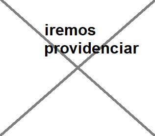

Pastoral do adolecente
se reune ás quartas feiras na comunidade Santa Ana
horário: 19:30

Grupo de oração
se reune ás segundas feiras na comunidade santa Ana
horário: 19:30

Grupo das mães que oram pelos filhos
se reune ás terças feiras na comunidade São Sebastião
horário: 19:30

terço dos homens Bom pastor
se reune ás XX na comunidade Bom pastor
horário: 19:30
mais...